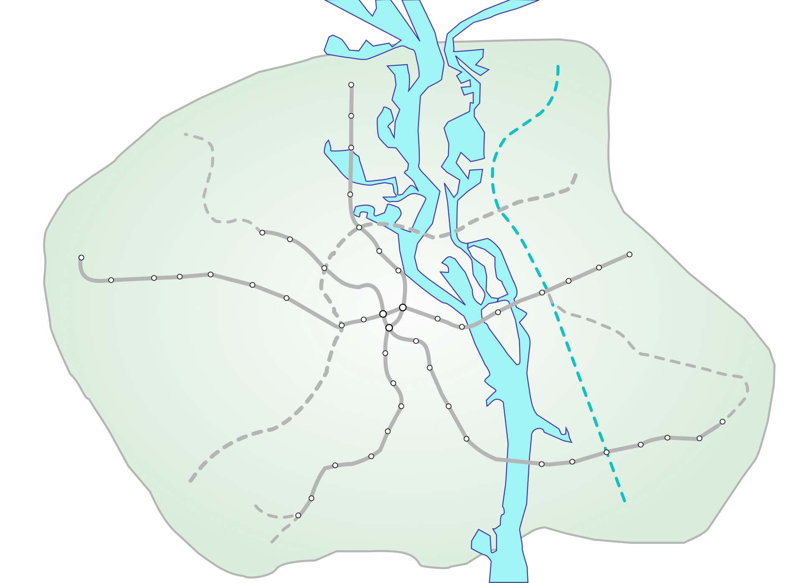
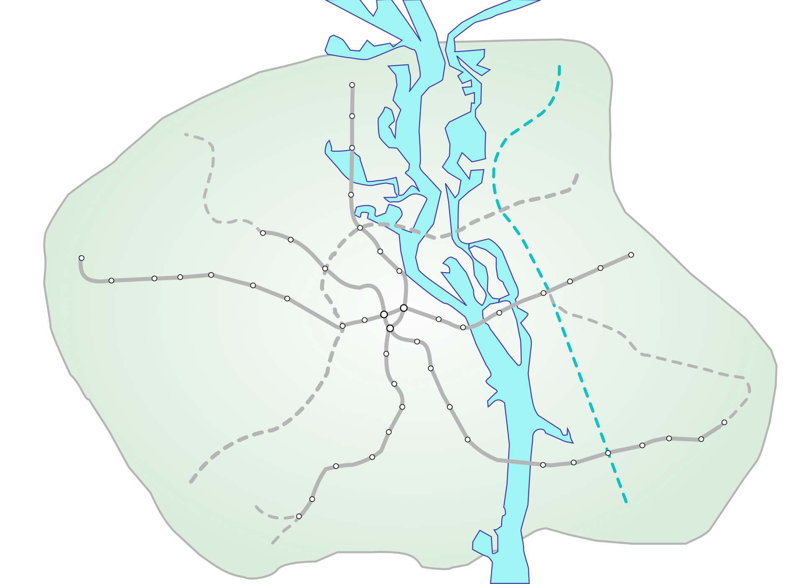
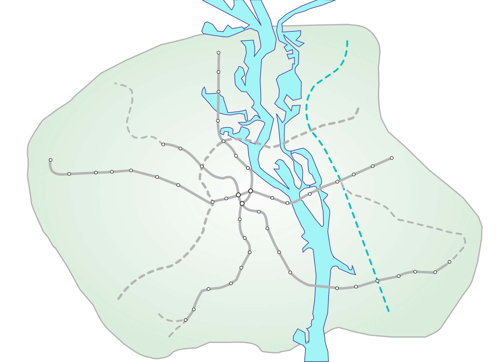

Київський метрополітен — швидкісна позавулична транспортна система Києва. Діють три лінії, експлуатаційна довжина яких становить 69,648 км. До послуг пасажирів — 52 станції з трьома підземними пересадочними вузлами в центрі міста. Після відкриття 6 листопада 1960 року став третім метрополітеном в СРСР після московського і ленінградського.
Власником метрополітену є багатопрофільне комунальне підприємство «Київський метрополітен», створене у 1990 році. Компанія працевлаштовує майже 8 тисяч робітників (станом на 2011 рік), у його складі діють 17 експлуатаційних служб, в тому числі три електродепо метрополітену (ТЧ-1 «Дарниця», ТЧ-2 «Оболонь» і ТЧ-3 «Харківське»), вагоноремонтний завод (ВРЗ), дирекція будівництва метрополітену. Фінансові надходження поступають від основної діяльності — перевезення пасажирів, а також непрофільних доходів — надання в оренду площ та рекламомісць, реклами (метролайти, монітори на станціях, вагонах, оформлення станцій) та субвенції і компенсації з міського та державного бюджету.
Станція «Арсенальна» Святошинсько-Броварської лінії є найглибшою станцією метрополітену у світі й розташовується на глибині 105,5 метрів (відстань від поверхні землі до платформи), а наступна станція «Дніпро» є наземною, тому цей перегін є ще й світовим рекордсменом з перепаду глибин.
Чотири станції першої черги будівництва («Вокзальна»[п 1], «Університет»[п 2], «Хрещатик»[п 3], «Арсенальна»[п 4]) визнані пам'ятками архітектури місцевого значення, ще три станції («Дніпро»[п 5], «Либідська»[п 6], «Золоті ворота»[п 7]) мають статус «щойно виявлений об'єкт культурної спадщини».
Автори станції «Золоті ворота» 1991 року були відзначені Державною премією України по архітектурі[п 8].
На всіх станціях Київського метрополітену присутнє 2G покриття операторів мобільного зв'язку Vodafone, Київстар, lifecell.
Метрополітен не працював 18–20 лютого 2014 року, вперше за усі роки роботи, за дорученням голови КМДА Володимира Макеєнка під приводом «загрози терористичних актів у місті» та з 18 березня по 24 травня 2020 року у зв'язку з карантином в Україні через пандемію коронавірусу.
3 5 по 30 квітня 2021 року роботу Київського метрополітену суттєво обмежено впровадженням перепусткового режиму у зв'язку загостренням епідеміологічної ситуації.
